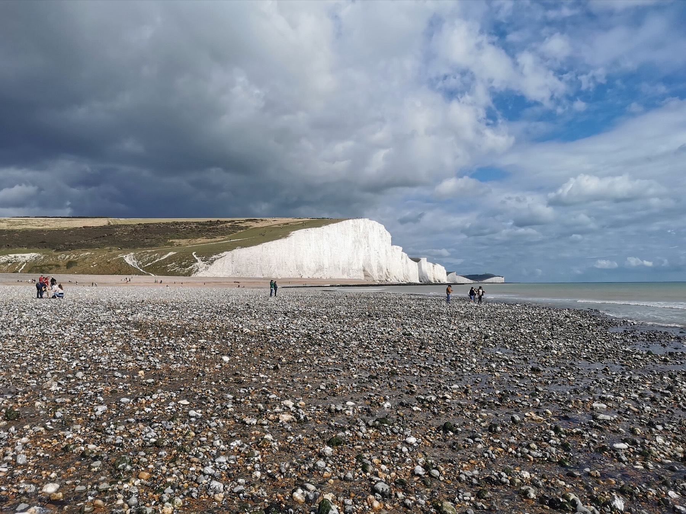

London → South Downs → Dorset
England
One useful London-edge day, then chalk cliffs, free-roaming New Forest ponies and the Jurassic Coast.
- Best airport and onward-flight flexibility
- Most varied scenery with gentler fallback walks
- Less alpine; southern traffic can blunt the rhythm